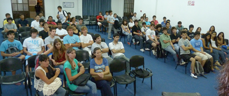

<link rel="import" href="../bower_components/polymer/polymer.html">
<link rel="import" href="../bower_components/paper-button/paper-button.html">


<dom-module id="utilidad-encuesta">
    <template>
        <style>
            #anterior{
                position: relative;
                left: 40%;
            }
            #siguiente{
                position: relative;
                left: 41%
            }
        </style>
        <div class="container">
            <div class="page-header">
                <h1 class="animated bounceInRight">¿Para qué sirve la encuesta?</h1>
            </div>
            <div class="row">
                <div class="col-sm-6 col-md-6">
                    <div class="thumbnail animated flipInX">
                        
                        <div class="caption">
                            <h2>Nos ayuda a conocerte</h2>
                            <p>
                                Cuando ingresas a estudiar una de nuestras carreras, es imprescindible que rellenes una <strong>encuesta.</strong><br>
                                Esta encuesta nos permite un montón de cosas para ayudarte. Algunas de ellas son:
                                <ul class="list-group">
                                    <li class="list-group-item"><strong><em>¿Quién sos?</em></strong></li>
                                    <li class="list-group-item"><strong><em>¿De dónde venís?</em></strong></li>
                                    <li class="list-group-item"><strong><em>¿En qué escuela secundaria estudiaste?</em></strong></li>
                                    <li class="list-group-item"><strong><em>Etcétera</em></strong></li>
                                </ul>
                                Esta información la usarán, junto a su experiencia, los tutores pares para darte la mejor ayuda en esta nueva etapa que 
                                estás por emprender.
                            </p>
                        </div>
                    </div>
                </div>
                <div class="col-sm-6 col-md-6">
                    <div class="thumbnail animated flipInX">
                        
                        <div class="caption">
                            <h2>Nos ayuda a acercarnos más a chicos.</h2>
                            <p>
                                Con lo que vos completas, no sólo te podemos ayudar a vos, sino a <strong>otros chicos que quieren llegar acá.</strong>
                                Esta encuesta es analizada por distintas partes de la facultad, logrando así tener información útil para agrandar, crear y mejorar los
                                medios de comunicación que tenemos, llegando así a más personas que, como vos, <strong>quieren formar parte de esto.</strong>
                            </p>
                        </div>
                    </div>
                </div>
                <h1 class="text center col-sm-6 col-md-6 alert alert-success animated zoomIn">A pesar de ser tu primer día en la facultad, <strong><em>¿viste lo importante que sos para nosotros?</em></strong></h1>
            <div class="col-sm-12 center-block">
                    <paper-button raiser class="btn btn-success" on-click="anterior" id="anterior">Anterior</paper-button>
                    <paper-button raised class="btn btn-info" on-click="siguiente" id="siguiente">Siguiente</paper-button>
            </div>
            </div>
        </div>
    </template>
    <script>
        Polymer({
            is: 'utilidad-encuesta',
            properties:{
                selected:{
                    type: Number,
                    value:0,
                    notify: true
                }
            },
            siguiente: function(){
                this.selected++;
            },
            anterior: function(){
                this.selected--;
            }
        });
    </script>
</dom-module>
